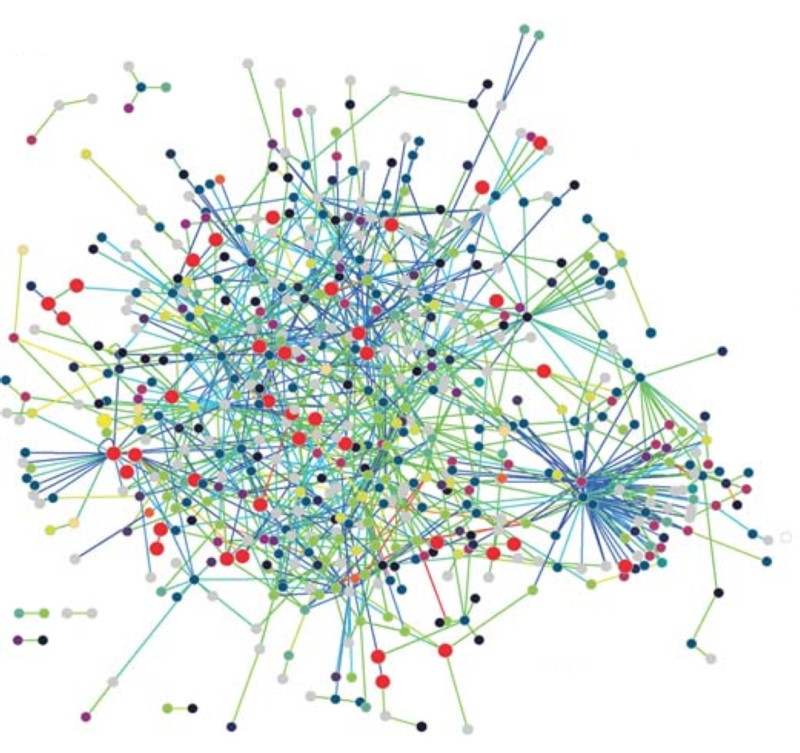

Finding the right job fit in Biotech
Sean Maden
June 30, 2015
(Originally featured on Biotech-careers.org, shared here with permission)
When it comes to finding the right job fit, in biotech or elsewhere, an initial step is to simply identify what factors are most important.
But one's idea of the right job fit can change over time as the economy shifts, new experiences are acquired, and professional networks (analogous to Titz et al 2008's protein-protein interaction network at right) expand. When the ideal job is not available, the best fit can be a position that leads in the right direction. Practically speaking, this means the factors that contribute to a good job fit can change over time and need to be repeatedly reassessed.

Work in biotech can range from academia to industry settings, and working roles in the field are similarly varied. The following is a quote from an excellent article by Lisa Belmont of UC Santa Cruz describing her experiences navigating a career in biotech:
"Biologists in industry settings work as part of large, multidisciplinary teams. This requires relinquishing the degree of intellectual freedom allowed in academia but offers an increased opportunity to see the fruits of one's labor translate into products with the potential to positively impact human or environmental health."
A primary takeaway from Belmont's essay is "the need to adapt and be open to new opportunities as they arise." This may prove a source of encouragement to many, as it means biotech employers value fundamental skillsets, and that a primary background in one topic doesn't close the door to working in other, perhaps distantly related, ones.
But are there fundamental factors in a good job fit, regardless of changing career goals? To address this question, a starting point can be with company rankings based on extensive employee surveys, as cited by Forbes and others. The qualities of top ranked employers can inform the job search, even with companies outside of one's chosen field. Surveys more specific to the biotech industry can also be consulted. But rankings tend to rate on cold numerics like median pay and company size, alongside arguably nebulous qualitative fators such as whether employees would recommend their employer to others, whether they are satisfied with their position, or whether they feel their schedule is flexible. For this reason, it can be informative to supplement these resources with personal testimonies, as can be found on sites like Glassdoor, with the tradeoffs of smaller sample sizes and the inherent limitations of anecdotal evidence.
To examine fundamental job quality in biotech more closely, there are some unique aspects of the field to be considered. One hallmark of a career in biotech is the prospect of work that both pays well and can have a meaningful impact in the world. To gauge a job on whether it meets both criteria, the former is quantifiable, but the latter is more of a personal assessment. Individuals' views of the worldly impact of basic research versus drug manufacturing are likely to vary. While the judgement of what constitutes meaning in biotech is largely subjective, many workers find that having a sense of making a difference in the world through their work is a compelling reason to pursue biotech.
Another unique aspect of biotech is its industry climate. Especially if you live in cities like Seattle, San Fracisco, and Boston, there are increasingly more opportunities to join startups. But there are some additional considerations that may be necessary when considering these sorts of positions. In an article from 2013, Luke Timmerman of Xconomy advises that startup employees need to ask "whether the opportunity in front of them is a pipe dream, or something with a real shot." The observation that many of the foundational studies upon which startup efforts are based cannot be reproduced is sobering, but it nevertheless continues to be a valid concern.
Social factors also play a role in the quality of any position. In terms of demographics, STEM (Science, Technology, Engineering, and Math) fields have historically been mainly populated by white males, and metrics like the gender ratio of a company's workforce may be pertinent in finding a good fit. In biotech, there is a growing awareness of how social and demographic factors can affect the job environment, with growing discourse towards diversifying workforces and becoming more accomodating to the varying needs of employees. The editor of Biotech Now writes: "Biotech professionals have heeded the call to make changes [to the underrepresentation of minorities] and are accelerating the steps necessary to remedy the situation." Another social issue, parental leave, is increasingly viewed as necessary and practical aspect of employment by employees and some employers, though support still varies by employer. Kendall Powell of Science indicates that egalitarianism and social respect are among the factors that have defined some of the best companies in the field.
There is an abundance of other factors that affect the quality of work life in biotech, which should be of interest to virtually any job candidate. These may include employee turnover rate, the influence of stakeholders and investors on research, and pressure to work overtime. The answers to these and other questions are not always readily available in public surveys, but the biotech worker's research skills can certainly be brought to bear to investigate employers more deeply. Some alternative approaches include: following the company's posts on LinkedIn and Facebook; reading up on their company history and agenda; and seeking out an informational interview with an employee for insight, advice or leads.
Of course, you're already at a great place to delve further into what factors contribute to a good job fit in biotech. You can find many helpful resources here and at Bio-link.org for learning more about what work in biotech is like and the variety employment opportunities the field has to offer.
Further reading
In Seattle, Biotechnology Is On the Upswing : Blog about growth and expansion of the biotech industry and job market in Seattle, WA.
Using the Informational Interview to Land a Job You'll Love : Blog about how to network and make connections using informational interviews.
Cracking the Monty Hall problem with brute force simulation : Blog about using brute force simulation to understand the Monty Hall problem.